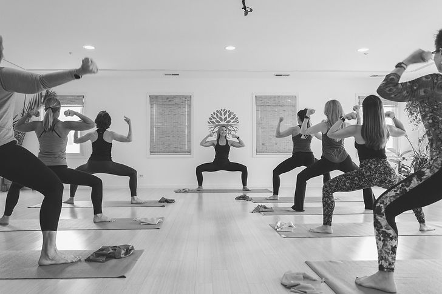

Just Be Flow
Yoga postures with breathing and meditation practices.
Yoga · Community · Downtown Naperville
A woman-owned studio in the heart of downtown Naperville, bringing people together through yoga, meditation, and mindful movement.

The studio behind the classes
Founded by Naperville resident Brooke Hornbaker, Just Be Yoga welcomes students of different experience levels. Its second-floor spaces bring together natural light, bamboo floors, and a community-centered approach to practice.
Visit at 124 S Webster Street, on the corner of Webster and Jefferson. Enter on Webster and head upstairs to the second floor.
Find a practice that fits
Explore the studio’s class descriptions, then check the live schedule for current offerings.
Yoga postures with breathing and meditation practices.
Yoga with light weights and other props for a varied strength-focused class.
A slower practice with longer posture holds.
Music-driven movement connecting breath and alignment.
Options for mindful movement, mobility, and supported practice.
A dedicated prenatal offering. Ask the studio about current sessions and suitability.
Featured instructor on REC
Claudine’s teaching centers on an accessible, welcoming practice. She brings a love of music, movement, and connection to her classes.
Explore her REC page to learn about her teaching, read a genuine student recommendation, and find where to practice with her.
Explore Claudine’s page →Claudine is a featured REC instructor. Explore Just Be Yoga’s full teaching team on the studio website.
Meet the full studio team ↗A genuine recommendation for Claudine
“Claudine leads with such a pure open heart. I learn from her every time I’m in her class. Claudine is my yoga guru.”
— Steph · Recommendation shared on REC
This recommendation is about Claudine’s teaching; the original does not name a studio.
Get to know Claudine →Plan your visit
124 S Webster St, 2nd Floor
Naperville, IL 60540
Check current classes, instructors, and availability through the studio’s booking page.
Reservations and payments take place directly with Just Be Yoga.
Call (331) 296-1350More ways to connect
Explore studio events and workshops, or inquire about a private session tailored to your practice.
Private appointments are arranged with the instructors. Contact the studio for current options.
Great teachers deserve recognition
Recommend the instructor who made it special. Download REC, search for your teacher, and share what their class meant to you.
Download REC for iPhone